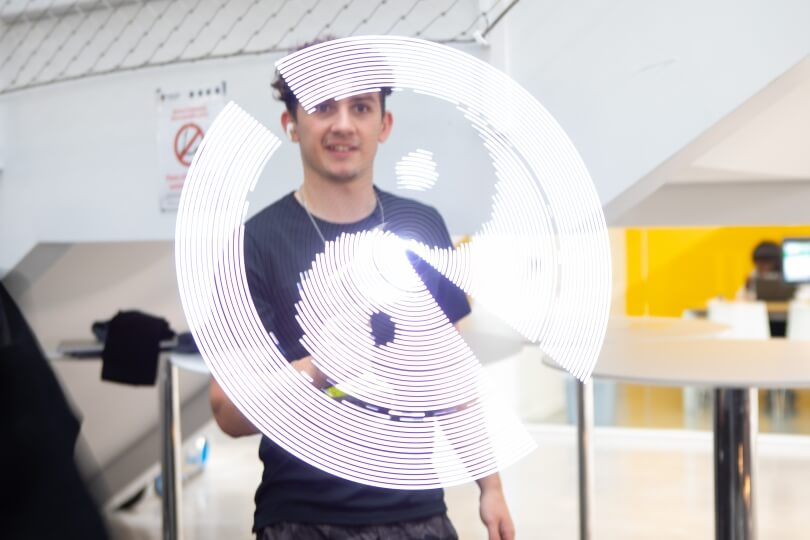

3D Holographic Fan
The final project for my Electrical Engineering course, we were given creative freedom to build whatever we wanted, within the scope of the course. It just so happened that I was in KungFu Tea the night before, where I was taken aback by the seemningly floating images of their bubble tea in the corner of the restaurant - so I knew that was what I wanted to build. This project left me fulfilled, as it explored an array of different (and some new) engineering conecepts.